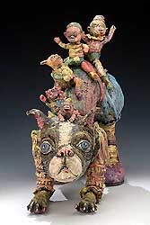

| Janis Mars Wunderlich
American ceramist (and mother of five).

Born
in Akron, Ohio in 1970, Janis
Mars Wunderlich received her BFA from Brigham Young University
in Utah and MFA from Ohio State University. Her ceramic sculptures
have been in numerous national and international exhibitions, including
3 solo exhibitions in the past year. She has held workshops and
lectures at many museums and universities throughout the U.S. and
Canada.
Janis has been the recipient of several awards and grants, including
multiple fellowships from The Ohio Arts Council and The Greater
Columbus Arts Council. Janis and her husband Philip have five children.
She is a full-time artist and mother... For more information and
images, please visit Janis' website http://www.janismarswunderlich.com.

Artist's Statement
My
imagery captures the exhaustion and exhilaration of life as both
a creative artist and busy parent. My children inspire me with both
their imaginative minds and animal-like energy. As I nurture and
care for them, they continually feed my thoughts with their “fairytale-like”
quirkiness.
But parenting is physically and emotionally demanding! The cleaning,
cooking, chores, and laundry never end. The tantrums, messy diapers,
and adolescent “sassiness” are emotionally draining.
The babies are always clinging to me, hanging onto my arms and legs.
Sometimes I look like a playground! But I love it!
My recent work explores the idea of “accessorizing”
with children. Sometimes I feel as though my wardrobe consists of
kids from head to toe. Instead of “artsy” or fancy accessories
and jewelry, I have children hanging from my ears, neck, and arms!
In a sense, the mother figure seems hidden or lost behind all the
clingy creatures. But in reality, she is strengthened, clothed,
and made beautiful by them. They give her layers, textures, identity.
Children’s literature is a big influence in my work, from
Peter Rabbit and Curious George to the Wild Things and Grimm Fairy
Tales.. (My kids LOVE stories!). Mother Goose has especially influenced
me in recent works. I love the bizarre poetry about men who go to
sea in a bowl, cows jumping over the moon, or dishes running away
with spoons! These stories, much like my sculptures, are filled
with animalistic creatures who provoke the mind to look beyond reality
into the realm of the imagination.
I feel a natural connection to the animal kingdom, (mostly because
my children often behave like naughty little animals!) but also
because of the inherent nurturing and protective instincts that
I possess as a mother. My imagery often has animalistic qualities,
making my sculptures reference humanity in all its diversities.
I am amazed at how my parental experiences—the good and frustrating—fuel
my imagination. I view my sculptural works much like journal entries
that document my personal journeys. I often create work laden with
complex dualities, showing both the suffering and joys of life.
My sculptures are handbuilt using thin, slab-like coils of clay.
The glaze surfaces are built up by multifiring layers of underglaze,
slips, and overglaze.
Motherhood fills my mind and life with such incredible images and
experiences. The challenge for me is to keep my sanity and sense
of humor as I balance my time between all the fun and craziness
of parenthood and art-making. It’s been an amazing journey
so far!
More Featured Artists
More Articles
|
{kind=link}
{kind=link}
{kind=link}
{kind=link}
{kind=link}
{kind=link}
{kind=link}